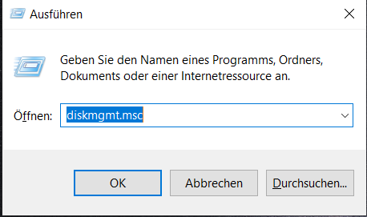
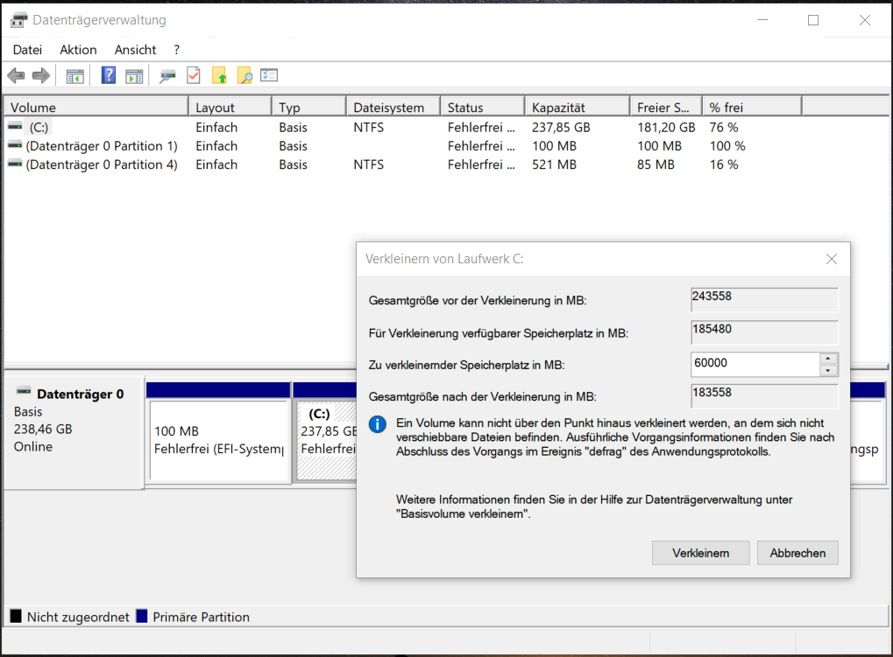
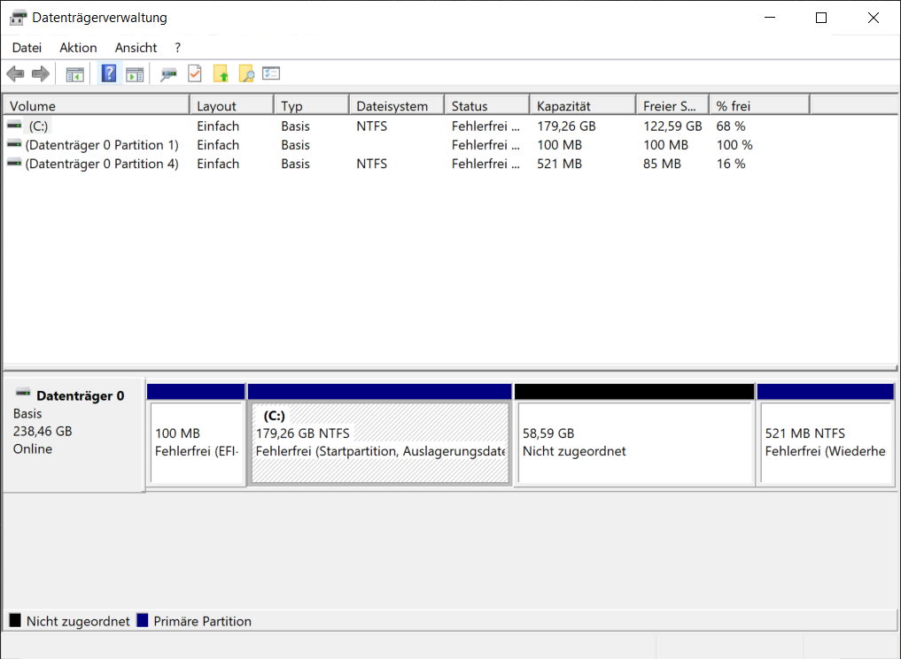
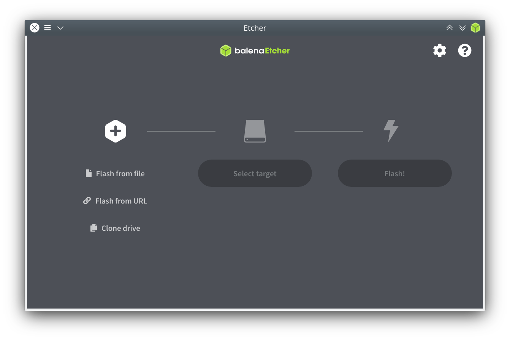
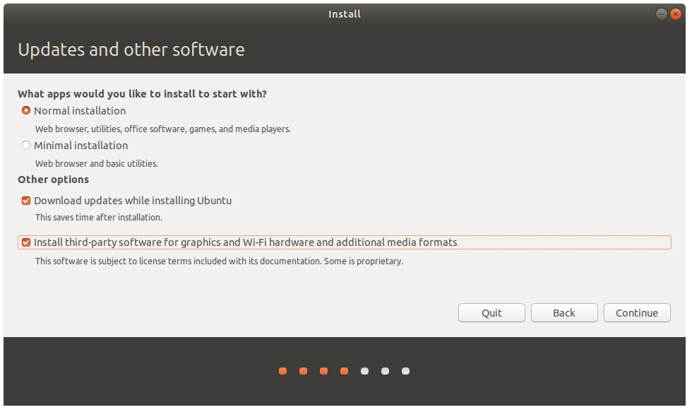
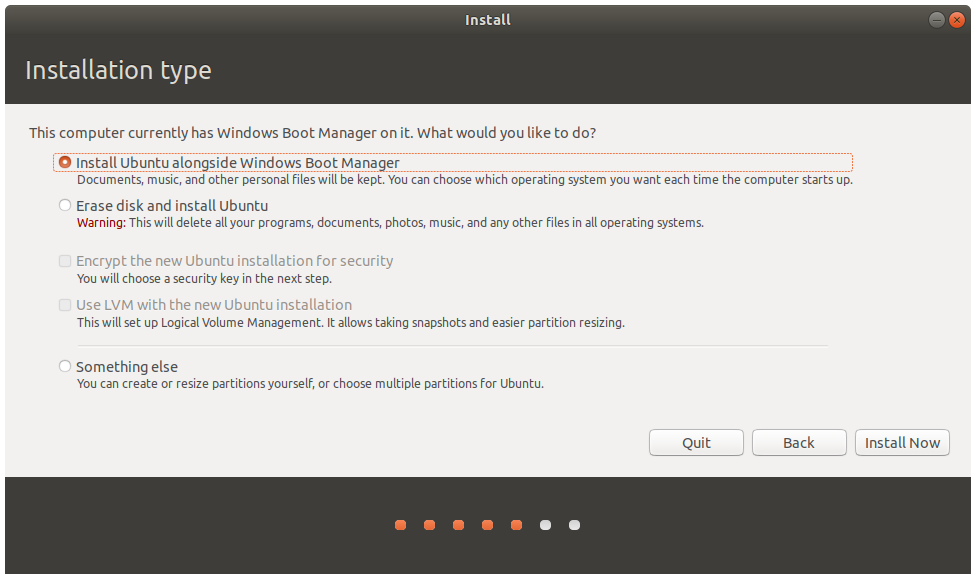

Install Ubuntu¶
This section should guide you through the process of installing Ubuntu alongisde Windows on your machine. If you prefer to install Ubuntu inside a Virtual Machine, you can skip this section and continue with Virtual Machine.
Attention
Since we are going to install a new/second operating system on your device, that might be a good opportunity to create a backup just in case anything goes really wrong! We are not responsible for any damage or loss of data that might result from any of the following instructions.
Note
For those of you who have their windows encrypted with bitlocker you might have to enter your bitlocker key the next time you boot windows after you have installed Ubuntu. You should save your bitlocker key (you can find it here). Alternatively you can turn off bitlocker encryption.
Prepare Your Disk Partition¶
Resize your Windows partition. Hit Win + R and enter
diskmgmt.msgand click OKChoose the partition on which you want to install Ubuntu (in most cases this will be
(C:).Resize the partition to create unallocated space where we can install Ubuntu. 30GB of free space might be enough for Ubuntu, but we recommend at least 60GB if you can afford it.
The result could look similiar to this:

Create A Bootable USB stick¶
Download Ubuntu 18.04 Desktop from the offical Website.
Download Etcher.
Insert an USB stick with at least 4GB of memory.
Start Etcher and select the downloaded Ubuntu image and the inserted USB device as target.
Make sure you really selected the correct target. Otherwise all your data on the wrongly selected target might get deleted.
Click Flash!.
Disable Fast Startup¶
If you want to access your Windows partition from inside Ubuntu, you need to disable Windows’ Fast Startup. Follow these instructions, if you want to do so.
Disable Secure Boot¶
Reboot your system after flashing is done and enter your BIOS/UEFI. During Bootup. To do so you have to hit a certain key, depending on your hardware. For Dell commputers you probably need to hit F12 during the DELL splashscreen. For Lenovo it is Enter. This opens a dialog where you can choose to enter your BIOS settings.
Find the settings to disable Secure Boot, save your changes and exit the BIOS/UEFI.
Boot From Ubuntu USB Stick¶
Reboot and select the medium you want to boot from during the splashscreen (again F12 for Dell or Enter for Lenovo). Now you want to boot from the Ubuntu USB stick.
Choose
Try Ubuntu without installing. This will boot Ubuntu from the USB stick.
Start The Installation Wizard¶
On the desktop there will be an icon for installing Ubuntu. Double click it to launch the installation wizard.
Choose the option to install additional drivers. It is also a good idea to connect to a nearby WiFi or Ethernet.
In the last step of the installation the wizard asks you if you want to install Ubuntu alongside windows because it detects your windows installation and the free disk space we created before. Chose this option and click Install Now.
Warning
Do NOT choose the Erase disk and install Ubuntu option! This will delete your Windows installation!
Reboot.